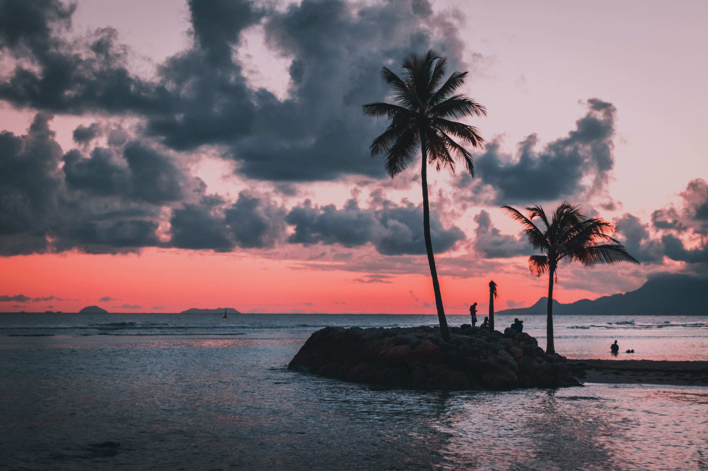
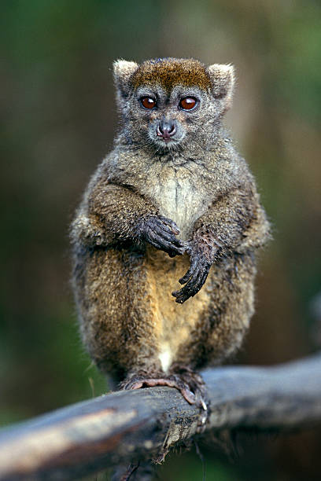
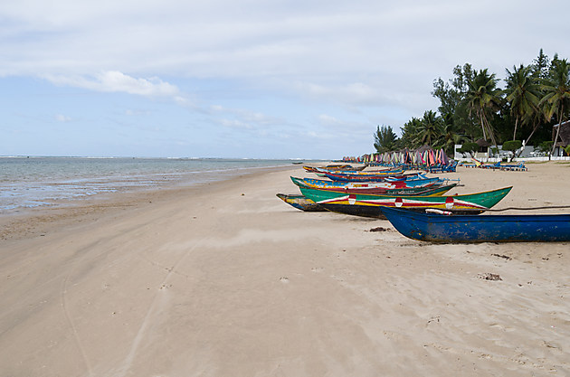

L' est de Madagascar
A peu prés 11 jours
Antananarivo ~ Sainte-Marie

Explorez le Nord de Madagascar
Le plus grand lémurien INDRI INDRI du parc Andasibe, avec son cri magique le matin. Réserve exotique de Madagascar qui vous donne l'occasion de voir différents caméléons, reptiles, réserve de Vakona que vous avez possibilité de voir approcher les lémuriens sans oublier
la marche nocturne qui vous donne l'occasion de voir les microcèbes ou lémuriens souris, les plus petits lémuriens du monde avec 50g de >poids , grenouille , caméléon …
Andasibe
Constitué de forêts denses, le Parc National d'Andasibe est une aire naturelle protégée. Habité par les lémuriens, ce parc naturel abrite aussi de nombreuses autres espèces animales. L'écosystème de ce lieu est varié avec une faune et une flore tout en couleurs : orchydées, goyaviers, bambous et eucalyptus. Une visite naturellement verdoyante!

Palmarium
Situé au nord de lîle, le Parc National d'Ankarana s'étend sur 18 220 hectares. Cette réserve naturelle et animale recense plus de 60 espèces différentes de reptiles et amphibiens, 96 espèces d'oiseaux et plus de 330 espèces végétales. Région montagneuse constituée de calcaire, le massif s'achève à l'ouest avec une falaise impressionnante s'étendant sur 25 kilomètres de long et surnomée "le mur de l'Ankarana".

Foulpointe
Nosy Komba qui veut dire « Île aux lémuriens » est la deuxième principale île de l’archipel de Nosy Be. Elle est également connue pour abriter de nombreux lémuriens considérés comme sacrés par les habitants de l’île. Venez découvrir les paysages grandioses qui la façonnent ainsi que les nombreuses activités et sports nautiques que l’on peut y faire.Nosy Komba est l’île la plus peuplée après Nosy Be avec près de 4000 habitants, elle n’est seulement qu’à 15 minutes de Hell Ville en bateau.

Sainte-marie
Nosy Komba qui veut dire « Île aux lémuriens » est la deuxième principale île de l’archipel de Nosy Be. Elle est également connue pour abriter de nombreux lémuriens considérés comme sacrés par les habitants de l’île. Venez découvrir les paysages grandioses qui la façonnent ainsi que les nombreuses activités et sports nautiques que l’on peut y faire.Nosy Komba est l’île la plus peuplée après Nosy Be avec près de 4000 habitants, elle n’est seulement qu’à 15 minutes de Hell Ville en bateau.